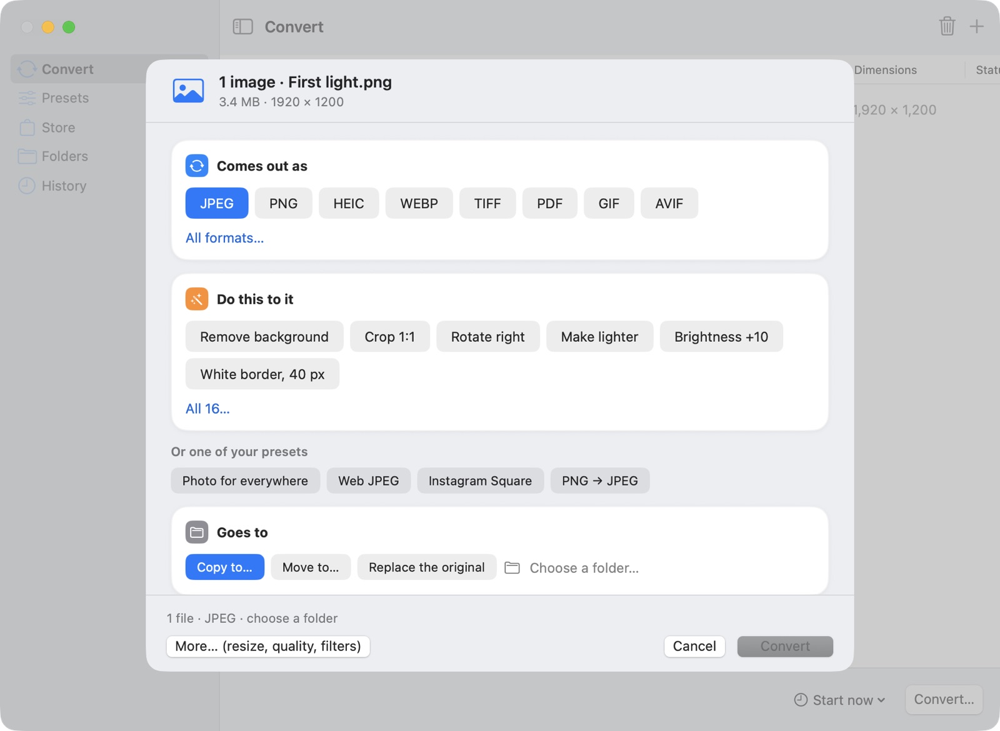
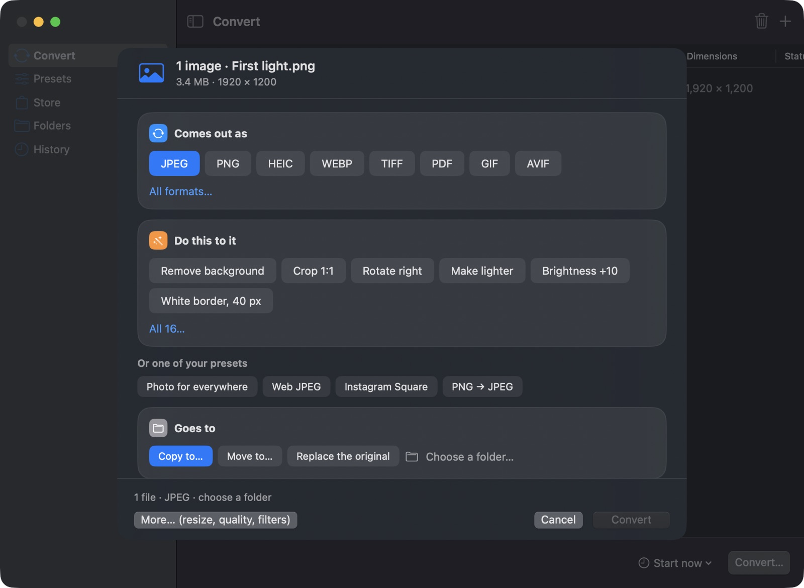
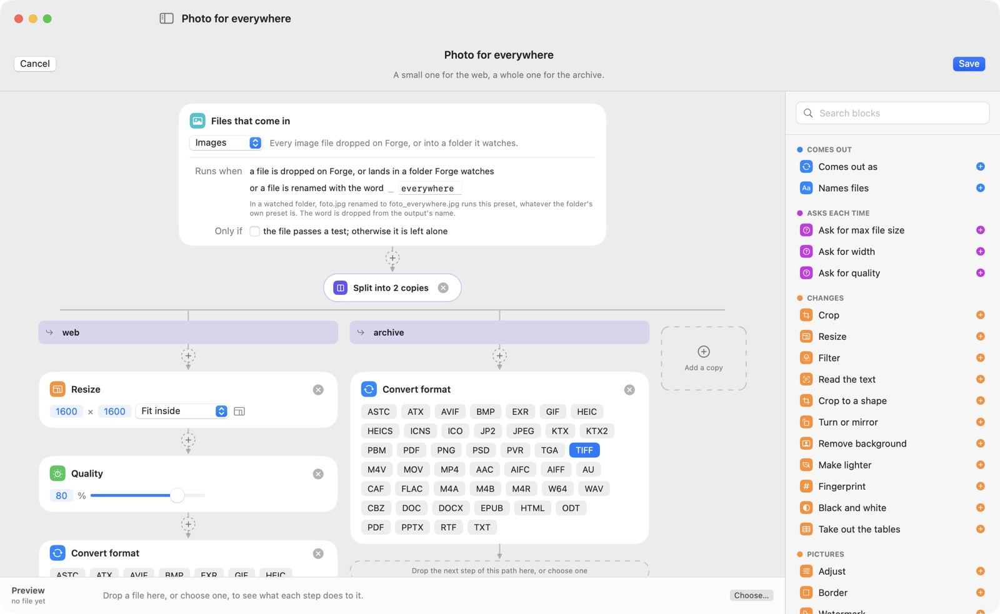
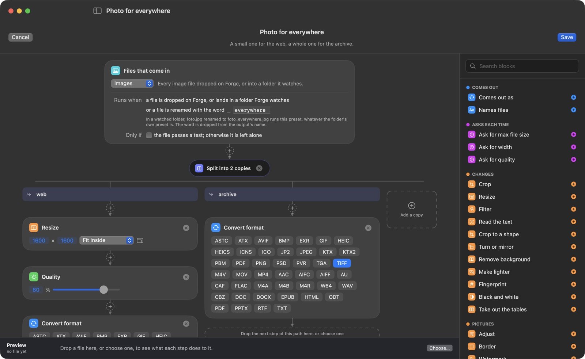
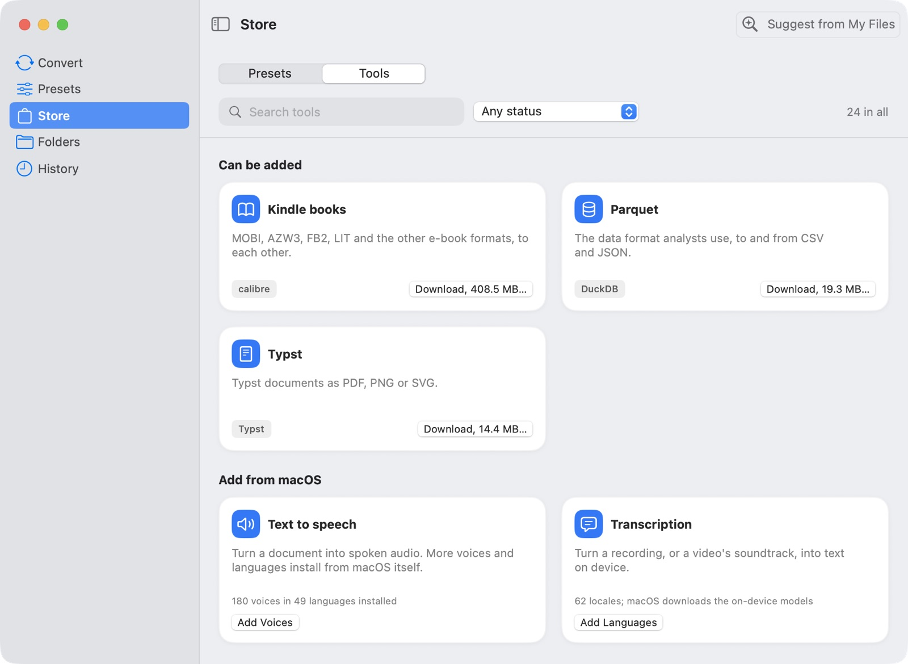
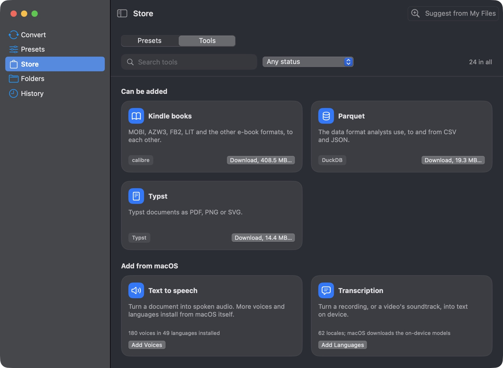
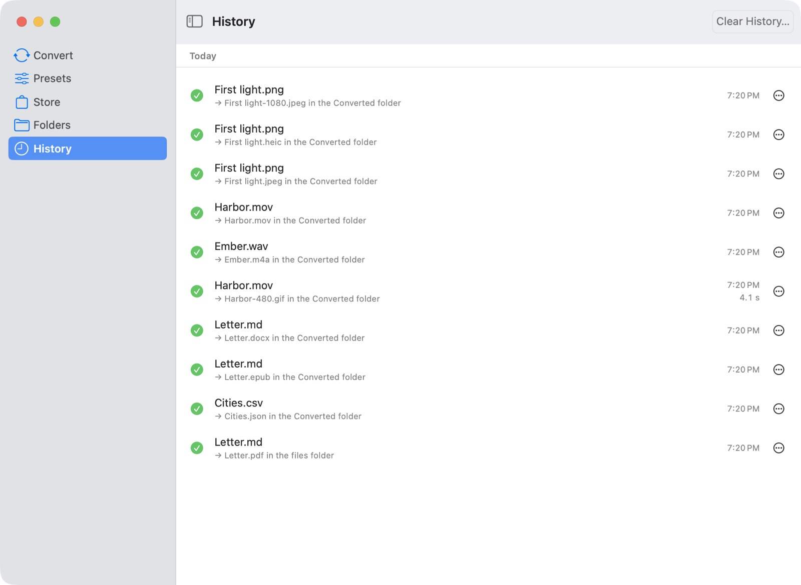
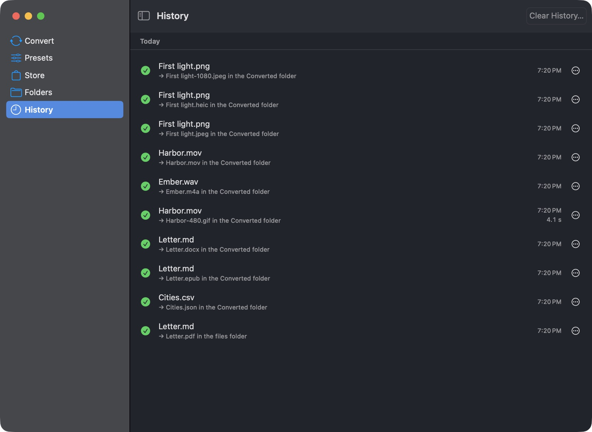

Rename a file, and it becomes what you called it.
A free, open source file converter for macOS.
DownloadClick a file to rename it. · Not notarized: how to open it
Say it in the name
Choose a folder to watch, and rename a file in it.
Turn on Only when renamed and every other file in the folder is left alone, so a whole Desktop can be watched. Your own presets can have a word too: give one the word web, and photo_web.jpg runs it.
What it does to a file
Forty-five things, each one a block in a preset, a word in a name, and --do on the command line.
Pictures
- _nobg
- _scan
- _enhance
- _upscale2x
- _crop1x1
- _blurbg
- _gray
- _round40
- _border40
- _mark(©)
- _grid3x3
- _layers
Videos
- _trim10-45
- _crop16x9
- _speed2x
- _slowmo2x
- _mute
- _reverse
- _loop3
- _1080p
- _fps30
- _frames5s
- _at12s
- _splitchapters
Sound
- _voice
- _normalize
- _nosilence
- _fade3s
- _pitch+2
- _mono
- _wave
- _lighter
- _pages2-5
- _nopages1
- _splitpages
- _2up
- _numbers
- _tables
- _images
- _dpi300
- _askpassword
- _unlock
The rest
- _min
- _pretty
- _sha256
- _base64
Words add up: clip_trim10-45_mute_720p.mp4 does all three. Some need a tool that macOS does not come with, and Forge says which one.
Or any other way you like
Dragging, the notch and the conversions nobody asks for are off until you turn them on in Settings.
- Drop it on the window, on the Dock icon or on the menu bar.
- Drag it with a key held down, and a menu opens over the file with what it can become. It comes out of the notch too, on a Mac that has one.
- Right-click it in the Finder, under Services.
- Let a folder do it. Whatever lands in a watched folder is converted as it arrives.
- Call it from Shortcuts, from the command line, or from an assistant.$ forge convert note.md --to pdf --out ~/Desktop ~/Desktop/note.pdf 1 converted. $ forge mcp
The window
Drop some files, and Forge asks what they should become: a photo is asked about its size and quality, a video about its codec, a recording about its words.
A file is offered only what it can become on this Mac, and a control that would be ignored is not shown. Files of different kinds go through a preset together.


A size is a promise, not a setting.
Ask for 2 MB and Forge writes the file, measures it, and writes it again until it fits, giving up quality first and pixels only after that. If it cannot get there, it says so.
goose_2MB.heic 9.1 MB→1.3 MB
Presets
A preset is a chain of blocks, drawn the way Shortcuts draws one. It can ask a question each time it runs, write several formats at once, take different ways for different files with If, and split into copies that are joined again later, or merged into one PDF.
A preset is data, not code: a name and a list of things Forge already knows how to do. Installing somebody else's cannot make the app do anything new.


The Store
Ready-made presets, one for each thing Forge does, and the presets other people have published.
Tools lists what your Mac can do, read from your Mac at that moment, and what is missing. Nothing else has to be installed for the core to work. For the rest, press Download: Forge fetches the build it was tried with from whoever makes it, checks its fingerprint before using it, and keeps it in its own folder. No Homebrew, no password. Nothing is fetched until you press.


Careful with your files
- A conversion is written to one side and moved into place when it is whole.
- Two files heading for the same name both arrive.
- Replacing originals asks first, and keeps a backup unless you turn that off.
- A file that would come out heavier is not handed over as a lighter one.
- Every conversion is in History, where it can be undone, run again or saved as a preset.


What leaves with your files
A photograph carries where it was taken, and a PDF carries who wrote it. Forge can keep everything, remove the place, or remove whatever identifies a person, a device or a moment: in Settings, in a preset, for one batch, or with _privacy in a name.
The color profile and the orientation always stay, because without them the picture comes out wrong.
Before you download
Alpha. It works, it is tested, and it is still changing week to week.
Take the .dmg, open it, and drag Forge to Applications. It runs on Apple silicon and Intel, on macOS 13 Ventura or later.
It is not notarized, so macOS stops the first launch:
- macOS 15 or later: open Forge once, close the warning, then go to System Settings, Privacy & Security, and press Open Anyway.
- macOS 13 and 14: right-click the app and choose Open.
Free and open source, MIT. Your files never leave your Mac.